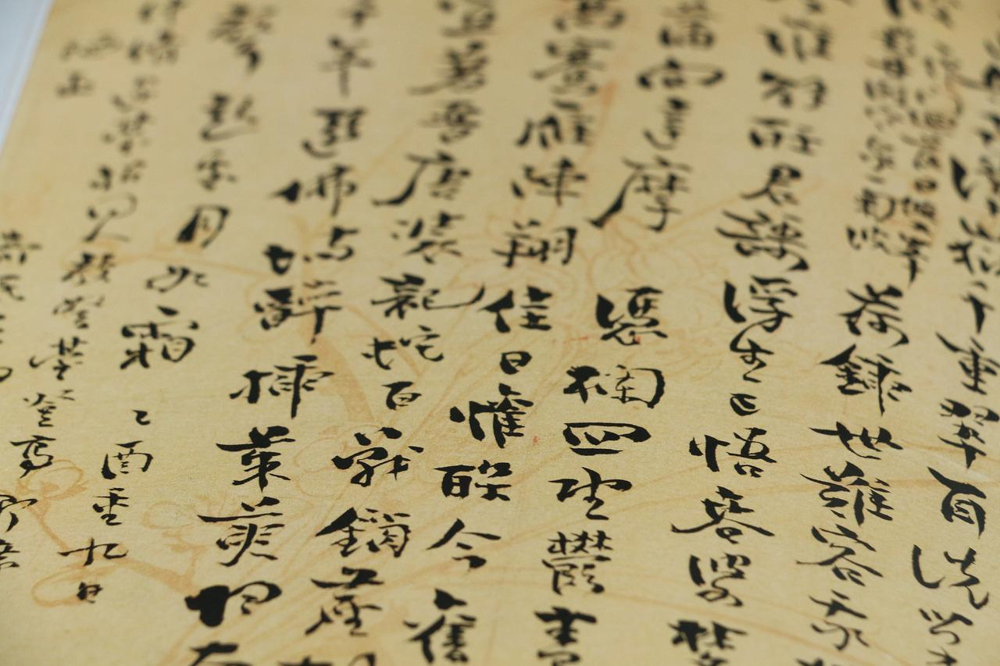

相關圖片
中華傳統文化
-
中華傳統文化
-
中華傳統文化
相關資訊
段意概括
- 分析蜀國面臨的形勢，向劉禪提出廣開言路的建議。（廣開言路）
- 向劉禪提出嚴明賞罰的建議。（賞罰分明）
- 親賢遠佞。
- 自述身世，回顧三顧茅廬至臨危受命以來與先帝共同創業的歷程，表明自己淡泊的志趣，與對先帝的無限感激。
- 追述先帝託孤以來的心情及做法，闡述自己興復漢室的策略和忠心。以表報先帝忠陛下之情。
- 再次強調每個人的分工與職責，表明自己出師的決心和信心。
譯文及註釋
北伐曹魏是蜀漢後期諸葛亮安邦定國的一種策略：以攻代守，與其坐以待斃還不如主動出擊。 “臣受命之日，寢不安席，食不甘味。”字裏行間透露出諸葛亮時刻不忘報答劉備的知遇之恩，諸葛亮將“鞠躬盡瘁”體現得淋漓盡致。 南宋詩人陸游曾高度評價這篇表文，說道：“早歲哪知世事艱，中原北望氣如山，樓船夜雪瓜舟渡，鐵馬秋風大散關，塞上長城空自許，鏡中蓑鬢已先斑，出師一表真名世，千載誰堪伯仲間。” 杜甫：“三顧頻煩天下計，兩朝開濟老臣心。”
賞析
《出師表》以懇切的言辭，針對當時的局勢，反覆勸勉劉禪要繼承先主劉備的遺志，開張聖聽，賞罰嚴明，親賢遠佞(nìng)，以完成“興復漢室”的大業，表現了諸葛亮“北定中原”的堅強意志和對蜀漢忠貞不二的品格。就當時形勢分析，且不說蜀魏兩國實力懸殊，僅“勞師以襲遠”這種策略也是兵家之大忌，但諸葛亮仍堅持鋌而走險，(先後六次統兵伐魏)並表現出百折不回的意志，其根本原因是北定中原、興復漢室是先主劉備的遺願。後主劉禪儘管昏庸無志，(“樂不思蜀”的典故足以顯示他的人品)諸葛亮還要竭忠盡智的輔佐他，儘管劉備有“如其不才，君可自取”的遺詔，他也不存半點僭越之心，因爲後主是先主的遺孤。“此臣所以報先帝，而忠陛下之職分也”，這是諸葛亮出師北伐的精神力量，也是他後半生全部活動的精神力量。 諸葛亮爲蜀漢基業“鞠躬盡瘁，死而後已”蜀漢建興五年（227），他率師北伐，在出師前寫下這篇表文。閱讀本文應着眼於“出師”這兩個字。具體地說，一是要看諸葛亮對出師後國內政事的安排。諸葛亮跟後主劉禪之間既是君臣關係，又是輔政者與被輔政者的關係（劉備臨終託孤）。諸葛亮這次出師時，劉禪只有20歲，昏庸無能，不懂得治理政事；如果出師後國內政局不穩，前方必然會受到重大影響。因此，出師後的國內政局就成了輔政者諸葛亮最放心不下的問題。要解決這個問題，就必須有正確的政治路線和組織路線。爲此，諸葛亮在這篇表文裏一面勸勉劉禪開張聖聽，嚴明賞罰，一面又向他舉薦人才來管理“宮中”“營中”之事，並殷切地闡明親賢遠佞的道理。這個問題解決得好，國內政局穩定，有了“平明之理”，諸葛亮才能無後顧之憂，可以專力伐魏，可見講治國大計和政事安排正是爲了出師。二是要看諸葛亮怎樣說明出師的理由。北伐的決策，實際上是諸葛亮的決策。當時在蜀國內部也有不同意見，有些人持靜觀態度，“欲以長策取勝，坐定天下”，反對立即出兵。在這篇表文裏，沒有重提這種爭論，只是對出師原因做了適當的說明。這種說明沒有反覆陳說得失利弊，而是抒情言志，作者把“北定中原”看做自己“報先帝而忠陛下之職分”。爲此，他歷敘自己的身世，從“躬耕”說到“許先帝以驅馳”，又從劉備的“寄大事”說到這次北伐的決心，其間五次提到“先帝”，表達自己的“感激”和“憂嘆”之情。這種方式既能打動君主，又有利於說服持不同意見的人。